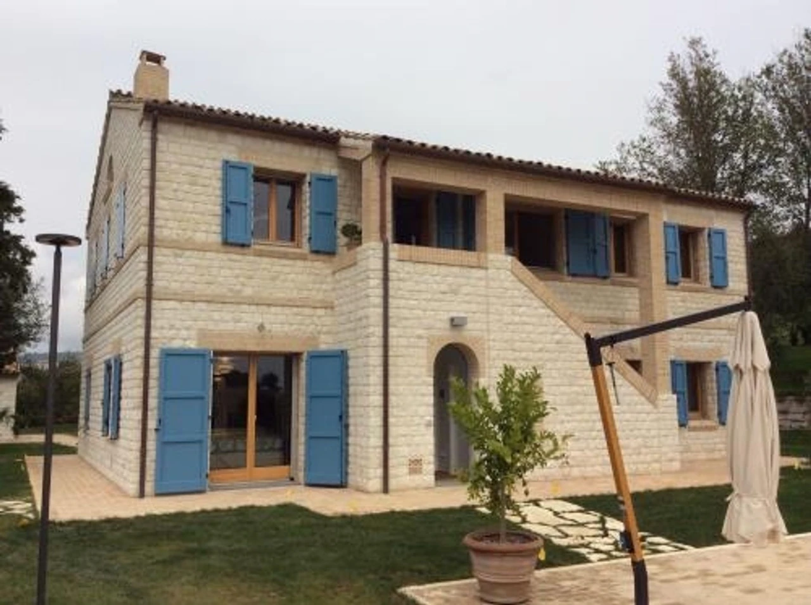

Sirolo · Ville e casali01
Casale in pietra del Conero
Progetto di Danilo e Nicola Guerri
Costruiamo ville. Recuperiamo casali.
Diamo futuro ai luoghi che chiami casa.
REALIZZAZIONI SIRIO COSTRUZIONI
Il nostro modo di costruire
LE RADICI NEL TERRITORIO.
LO SGUARDO SUL TUO PROGETTO.
Sirio è un’impresa edile di famiglia. Da oltre cinquant’anni lavoriamo a Sirolo e in provincia di Ancona, tra nuove abitazioni e recupero dell’esistente.
Dalla pietra del Conero agli spazi di oggi: affianchiamo clienti e tecnici per trasformare un’idea in un luogo da abitare.
Le nostre competenze
01 — COSA FACCIAMORecuperare il carattere di una casa. Dare nuove possibilità agli spazi che esistono già.
02Ville, casali e nuove abitazioni. Le tue esigenze prendono forma, un dettaglio alla volta.
03Un nuovo progetto residenziale a Castelfidardo. Scopri le tavole e chiedici le disponibilità aggiornate.
Dal progetto alla realtà
Progetto di Danilo e Nicola Guerri
Progetto di Alessandro Riboldi
Varano, Ancona
Il metodo Sirio
Le decisioni migliori nascono dal confronto. Ti accompagniamo nelle diverse fasi, con l’esperienza di chi conosce il proprio mestiere.
Iniziamo da un incontroUn sopralluogo per conoscere l’immobile, capire le tue priorità e mettere a fuoco le possibilità del progetto.
Con te e con i professionisti coinvolti concordiamo lavorazioni, materiali, fasi e preventivo.
Coordiniamo le maestranze e le opere, mantenendo il dialogo aperto fino alla consegna concordata.

PIETRA. LEGNO. CONERO.Il territorio, la nostra materia
Una casa nel borgo, un casale in campagna, una nuova abitazione. Ogni intervento parte dal luogo e dalle persone che lo vivranno.
Diamo spazio alla tua idea
Raccontaci cosa hai in mente. Trovi le persone che seguono l’impresa e il tuo progetto.
Ufficio di Sirolo071 933 0685siriocostruzionisirolo@gmail.comIl tuo progetto parte da qui
Compila i campi per preparare una richiesta. Potrai rileggerla e inviarla dalla tua app di posta.